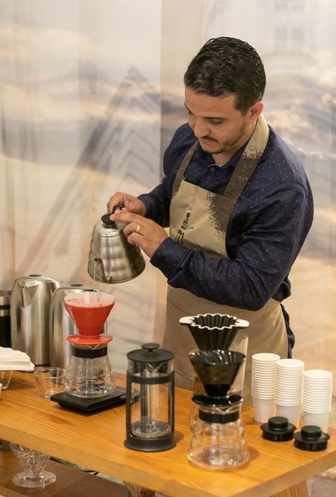
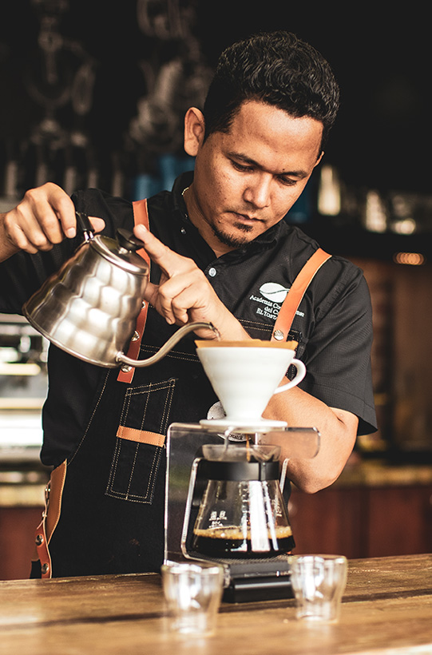

<!DOCTYPE html>
<html lang="en">

</html>

<head>
  <meta charset="UTF-8" />
  <meta name="viewport" content="width=device-width,initial-scale=1.0" />
  <title>Tutores Coffee arabica</title>
  <!--meta tag :kw 5 a 15-->
  <meta name="ketwords" content="cafe , cursos de cafe , barismo , barista, cafe de especialidad, cursos para baristas desde cero">
  <!--meta description-->
  <meta name="description" content="Descubre nuestros cursos de café de especialidad para aprender desde la preparación perfecta hasta la cata avanzada. Ideal para quienes quieran formarse como baristas y amantes del café arabica. Aprende con expertos.">
  <!--meta author-->
  <meta name="author" content="Carolina Benitez">
  <!--bootstrap-->
  <link href="https://cdn.jsdelivr.net/npm/bootstrap@5.3.3/dist/css/bootstrap.min.css" rel="stylesheet"
    integrity="sha384-QWTKZyjpPEjISv5WaRU9OFeRpok6YctnYmDr5pNlyT2bRjXh0JMhjY6hW+ALEwIH" crossorigin="anonymous">
  <!-- <link rel="stylesheet" href="styles.css"> -->
  <link rel="stylesheet" href="./css/style.css">
  <link rel="stylesheet" href="css/bootstrap.css">
</head>
<script src="https://cdn.jsdelivr.net/npm/@popperjs/core@2.11.8/dist/umd/popper.min.js"
  integrity="sha384-I7E8VVD/ismYTF4hNIPjVp/Zjvgyol6VFvRkX/vR+Vc4jQkC+hVqc2pM8ODewa9r" crossorigin="anonymous"></script>
<script src="https://cdn.jsdelivr.net/npm/bootstrap@5.3.3/dist/js/bootstrap.min.js"
  integrity="sha384-0pUGZvbkm6XF6gxjEnlmuGrJXVbNuzT9qBBavbLwCsOGabYfZo0T0to5eqruptLy" crossorigin="anonymous"></script>
<header>
  <nav class="navbar navbar-expand-lg bg-body-tertiary">
    <div class="container-fluid">
      <a class="navbar-brand" href="./cursos.html">CURSOS</a>
      <button class="navbar-toggler" type="button" data-bs-toggle="collapse" data-bs-target="#navbarNav"
        aria-controls="navbarNav" aria-expanded="false" aria-label="Toggle navigation">
        <span class="navbar-toggler-icon"></span>
      </button>
      <div class="collapse navbar-collapse" id="navbarNav">
        <ul class="navbar-nav">
          <li class="nav-item">
            <a class="nav-link active" aria-current="page" href="./nosotros.html">NOSOTROS</a>
          </li>
          <li class="nav-item">
            <a class="nav-link" href="./index.html">INICIO</a>
          </li>
          <li class="nav-item">
            <a class="nav-link" href="./sesion.html">SESION</a>
          </li>
          <li class="nav-item">
            <a class="nav-link" href="./tutores.html">TUTORES</a>
          </li>
        </ul>
      </div>
    </div>
  </nav>
</header>

<body class="fondo">
  <h1 class="titulo-de-tutores">CONOCE A NUESTROS TUTORES</h1>

    <h2 class="profesor">RODRIGO</h2> 
    

  <p class="descripcion-del-prof">Con mas de 15 años de experiencia en el rubro de café de especialidad. <br></p>
  <p class="descripcion2">Rodrigo, apasionado por latte art, ganador del campeonado mundial de baristas, mencion arte latte, 2022. Rodrigo se encarga
    de enseñar a nuestros alumnos la importancia de la estetica visual que puede desarrollarse haciendo un buen dibujo. Camilo es otro de nuestros guías en <strong>COFFE ARÁBICA</strong> con una larga trayectoria en el café, ha estudiado a gran escala el sabor ideal para tu espresso. Viajó a Perú, en 2023, donde aprendio a identificar mejor en las fincas de café y el dulzor y acidez de los granos.
  </p>
  <h3 class="profesor2">CAMILO</h3>
  
  
</body>
<footer class="footer">
  <address class="ubicacion">Estamos ubicados en la Región Metropolitana, Santiago de Chile</address>
  
  
</footer>
</html>